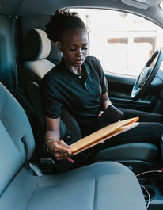
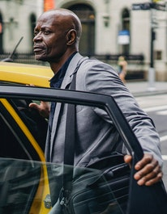

WHO WE ARE
T-security is an emerging integrated security company that specializes in the protection of taxi drivers with the combinatory effort of the police

Richard

I have never felt safer that this.
Rodnae
I have someone to rely on.
George
Efficiency and safety is their best suite.
Driver safety tips
We build our technology with your safety in mind. But actions you might take can also help protect yourself.
1.Staying focused on driving
You can help keep roads safe by staying alert, keeping your eyes on the road, and resting when needed to prevent drowsy driving. Remember: texting while driving is illegal in most states and countries. Some drivers use a mount to position their phone in a place where they can easily see it, to help reduce dangerous distractions. In some cities, laws require them.
2. Encouraging back-seat riders
You can consider inviting riders who are traveling solo to sit in the back seat. This allows them to safely exit from either side of the vehicle to avoid traffic and also gives you both some personal space.
3.Buckle up
In many places, seat belt use is required by law, for both drivers and riders. It’s also the most effective way to save lives and reduce injuries related to car crashes, according to the Centers for Disease Control.
4.Watching for pedestrians and cyclists
General rules of the road say to be on the lookout for people who are walking and biking. This is especially important when you’re pulling over for a dropoff or pickup, and when you're driving at night.
5.Keeping your dropoffs legal
Knowing local laws about where you can drop off riders can help when you encounter loading zones, parked vehicles, and more.
6.Follow your intuition
Trust your instincts and experience and use your best judgment when driving with Uber. If you ever feel you're in an emergency situation, you can get urgent help by using the emergency button in your app. And remember, if you feel unsafe you can end the ride at any time.
7.Being Kind and respectful
Treat each and everyone of your customers and pedestrians respectful.